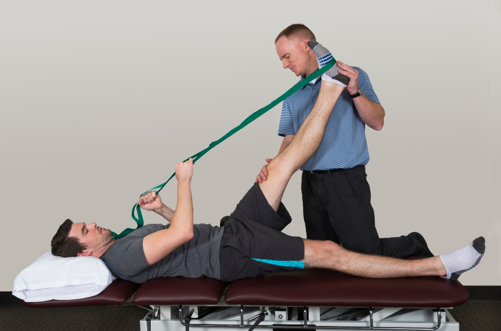
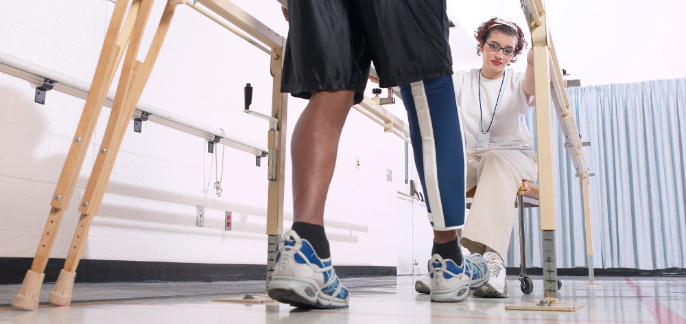

PHYSICAL THERAPY
{{x.physical1}}
1. Depending on your medical problem and personal circumstances, the treatment can focus on various goals:
- Improving or restoring the functioning of the body or the ability to move normally.
- Improving metabolism and the circulation of blood.
- Relieving pain.
- Improving coordination and strength.
- Compensating for physical disabilities: for example, strengthening the left arm if the right arm can’t move due to paralysis.
- Preventing chronic problems.


2. Benefits of physical therapy
Depending on the reason for treatment, the benefits of physical therapy may include:

- Pain management with reduced need for opioids
- Avoiding surgery
- Improved mobility and movement
- Recovery from injury or trauma
- Recovery from stroke or paralysis
- Fall prevention
- Improved balance
- Management of age-related medical problems
{{x.physical2}}
{{x.physical3}}